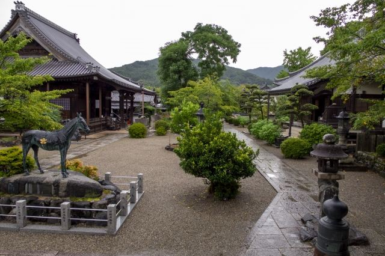
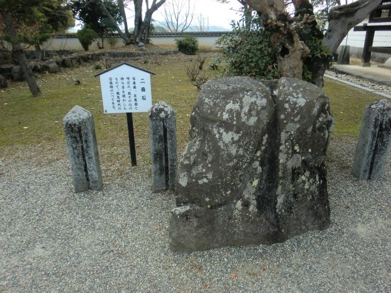

聖徳太子ゆかりの寺院
聖徳太子誕生の地と伝えられ、飛鳥時代から続く歴史を持つ寺院です。

橘寺は、聖徳太子ゆかりの寺院として知られる明日香村を代表する古刹です。 聖徳太子誕生の地と伝えられ、飛鳥時代から続く歴史を持つ寺院で、太子建立七大寺のひとつにも数えられています。 境内には本堂や二面石などの見どころがあり、周辺には川原寺跡や亀石などの史跡が点在しています。
| 営業時間 | 9:00〜17:00（受付16:30まで） |
|---|---|
| 定休日 | なし |
| 料金 |
大人 500円 高校生 300円 中学生 300円 小学生 100円 |
| 所要時間 | 30分 |
| 駐車場 | 橘寺参拝者駐車場 （無料） |
| アクセス | 近鉄飛鳥駅から徒歩35分。 |
| 地図 | 地図はこちら |

聖徳太子誕生の地と伝えられ、飛鳥時代から続く歴史を持つ寺院です。

善面と悪面を表した石造物で、人の心の二面性を表しているとされています。
橘寺は、聖徳太子が建立したと伝えられる古代寺院です。 創建当時は広大な伽藍を備えた大寺院でしたが、火災などにより多くの建物が失われました。 現在は本堂や観音堂などが残り、聖徳太子ゆかりの寺として多くの参拝者が訪れています。